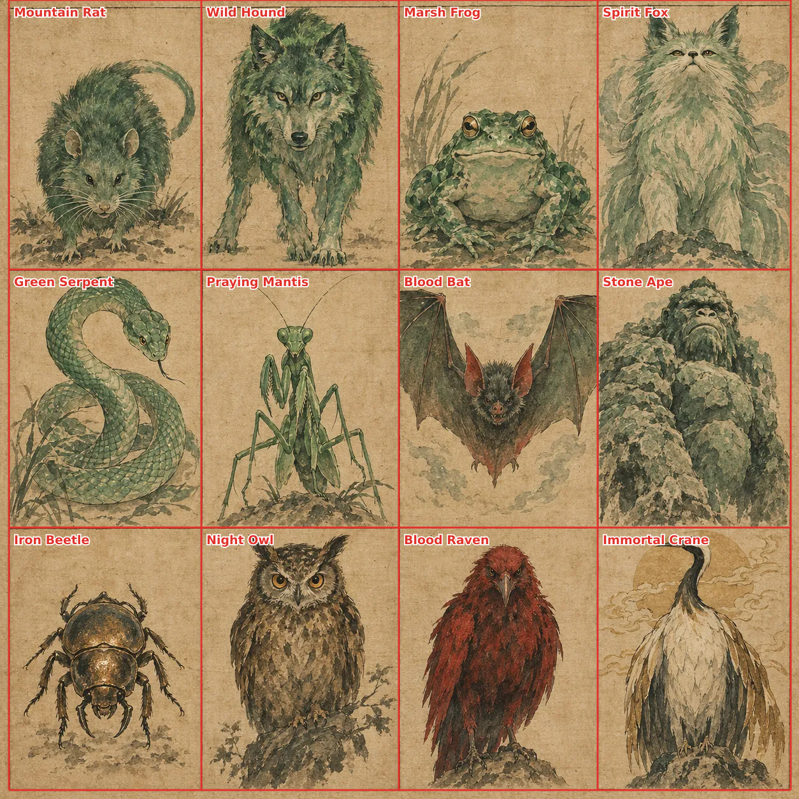
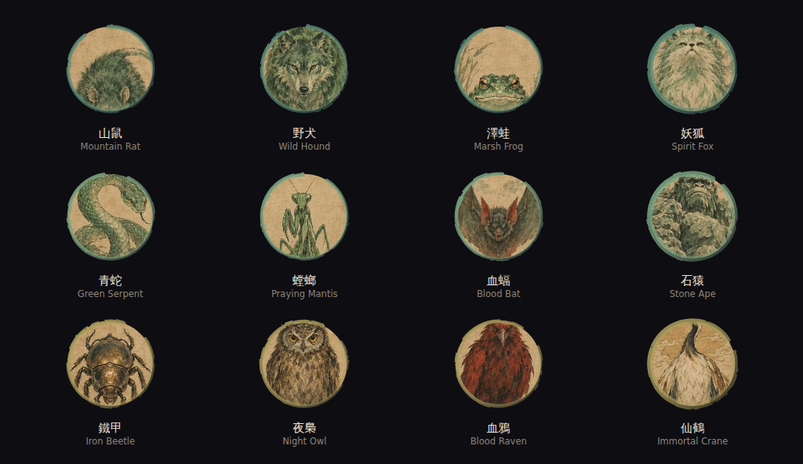
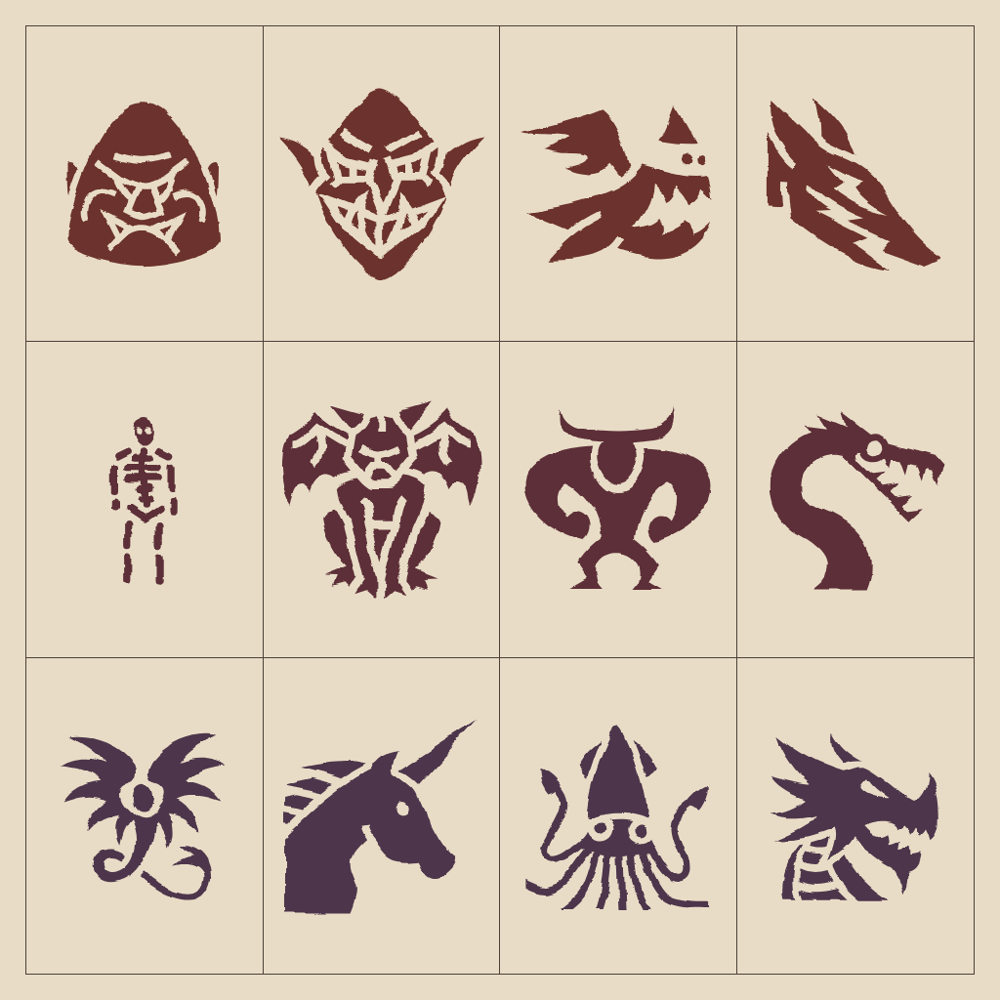
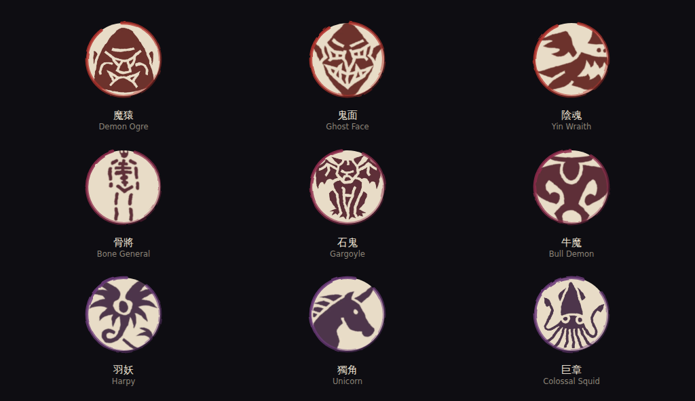

Six generations, not fifty-four. A free account hands out credits, and one credit is one square picture. So the unit of work stops being one creature and becomes one ruled page holding nine of them. The cutting is mine.
Bruno: "não consigo gerar tantas imagens com os créditos gratuitos do gpt. consegues dar-me um prompt por batches e depois recortar as imagens e fazer a tua magia?"
A creature is shown at about 120 pixels inside 牌 the plate. A panel of a 1024 sheet is 256. The detail was never going to survive the frame, so nothing is lost by drawing nine at a time.
Every sheet is done. 缺 the table below is read out of the game's own tables.
| Sheet | Holds | Grid | Save it as |
|---|---|---|---|
| 獸王 The nine wardens | 9 panels | 3 by 3 | ink-sheets/wardens.png |
| 女修 The cultivator, a woman | 9 panels | 3 by 3 | ink-sheets/self-woman.png |
| 男修 The cultivator, a man | 9 panels | 3 by 3 | ink-sheets/self-man.png |
| 女修 The cultivator, a woman, the ninth alone | 1 panels | 1 by 1 | ink-sheets/self-woman-9.png |
| 男修 The cultivator, a man, the ninth alone | 1 panels | 1 by 1 | ink-sheets/self-man-9.png |
| 緣 The ten encounters | 10 panels | 4 by 3 | ink-sheets/meetings.png |
| 緣乙 The road remembers, first sheet | 12 panels | 4 by 3 | ink-sheets/meetings-b.png |
| 緣丙 The road remembers, second sheet | 10 panels | 4 by 3 | ink-sheets/meetings-c.png |
| 境外 The nine Dragons of the heavens | 9 panels | 3 by 3 | ink-sheets/heavens.png |
| 境外又 Three Dragons of the heavens, painted again to be cut | 3 panels | 3 by 1 | ink-sheets/heavens-b.png |
| 天 The nine heavens, as places | 9 panels | 3 by 3 | ink-sheets/skies.png |
| 訣 The nine arts | 9 panels | 3 by 3 | ink-sheets/arts.png |
| 悟甲 Awakening cards, the first twelve | 12 panels | 4 by 3 | ink-sheets/awaken-a.png |
| 悟乙 Awakening cards, the last twelve | 12 panels | 4 by 3 | ink-sheets/awaken-b.png |
| 悟丙 Heaven cards, the first three heavens | 9 panels | 3 by 3 | ink-sheets/awaken-c.png |
| 悟丁 Heaven cards, the middle three heavens | 9 panels | 3 by 3 | ink-sheets/awaken-d.png |
| 悟戊 Heaven cards, the last three heavens | 9 panels | 3 by 3 | ink-sheets/awaken-e.png |
| 悟己 Heaven cards, the ninth heaven again | 3 panels | 3 by 1 | ink-sheets/awaken-e9.png |
| 雜 Herbs, pills and the rooms of the vault | 10 panels | 4 by 3 | ink-sheets/sundries.png |
| 獸甲 The commons of the first three realms | 9 panels | 3 by 3 | ink-sheets/beasts-a.png |
| 獸乙 The commons of the middle three realms | 9 panels | 3 by 3 | ink-sheets/beasts-b.png |
| 獸丙 The commons of the last three realms | 9 panels | 3 by 3 | ink-sheets/beasts-c.png |
| 境 The nine realms | 9 panels | 3 by 3 | ink-sheets/realms.png |
Read from the game's own tables by npm run artgaps, so a
family that gains a member is counted the next time it runs. A tick is a family
the game no longer draws as a symbol.
| What | Painted | Where it is seen | What it would take | |
|---|---|---|---|---|
| ✓ | 獸 creatures | 36 of 36 |
狩 the hunt list, 錄 the bestiary, 塔 a tower floor, 鬥 the arena | done |
| ✓ | 龍 the heavens' Dragons | 9 of 9 |
鬥 the arena and 修 the card, above the ninth realm | done |
| ✓ | 境 realms | 9 of 9 |
境 the realm card, and behind 鬥 the arena | done |
| ✓ | 修 the cultivator | 18 of 18 |
every screen with a portrait on it | done |
| ✓ | 緣 encounters | 32 of 32 |
修 the card that stops the game | done |
| ✓ | 境外 heaven backdrops | 9 of 9 |
鬥 behind a fight above the ninth realm | done |
| ✓ | 悟道 awakening cards | 51 of 51 |
悟道 the sheet at every breakthrough | done |
| ✓ | 訣 arts | 9 of 9 |
勢 the loadout and 道 the path tab | done |
| 勢 stances | 0 of 9 |
勢 the loadout, as a character chip | none: a stance is not drawn as a symbol, it is a character and a name | |
| 器 gear templates | 0 of 486 |
器 the gear screen, every chest row, every drop | drawn by the game from the template and the rarity, and it already reads | |
| ✓ | 草 herbs | 3 of 3 |
洞天 the cave beds | done |
| ✓ | 丹 pill lines | 3 of 3 |
爐 the furnace | done |
| ✓ | 秘境 secret realm rooms | 4 of 4 |
秘境 the vault, and its doorway on 狩 | done |
| 道 technique nodes | 0 of 28 |
道 the path tree | none: they are dots on a tree at 30px and a painting would not survive it |
| 1 | Open the image model. Paste one sheet prompt below. There is no opener to paste first: each sheet prompt carries the whole style itself, so a fresh chat is fine and a lost session costs nothing. |
| 2 | If it offers, attach 樣 the demonstration leaf further down as a reference picture. It shows the ruled grid better than the English does. |
| 3 | Save the square image it returns. Do not crop it, do not straighten it and do not cut anything out: the whole page, exactly as it came back. Name it after the sheet. |
| 4 | Send me the file, or drop it in ink-sheets/. |
| 5 | I run npm run slice. It measures where the rules
actually fell, cuts the nine panels, finds the subject in each one, squares it,
keys the paper off a second copy and writes both into the game. Then
npm run pictures, and they are in. |
| 6 | I send back 證 the proof: the sheet with every cut drawn on it, and the nine panels in the game's own frame. A bad panel is redone alone, and one panel costs one credit. |
9 panels, 3 across and 3 down. Saved as
ink-sheets/wardens.png.
beast/fox.webpbeast/ape.webpbeast/crane.webpbeast/tiger.webpbeast/turtle.webpbeast/golem.webpbeast/direwolf.webpbeast/jiao.webpbeast/dragon.webpOne single square image: a page from an old Chinese bestiary album, ruled into a grid of 3 columns by 3 rows, 9 panels in all. Draw the grid: thin dry ink rules, edge to edge, dividing the page into 9 equal rectangular panels with a narrow margin of bare paper around the outside. Every panel has exactly the same aged paper ground as every other one. Each panel holds one creature, centred, facing the viewer, head and body, filling most of its own panel. Nothing crosses a rule: no tail, no wing and no mist leaves the panel it belongs to. The panels, in reading order: Row 1, panel 1: spirit fox, the guardian of its realm, huge and still, seen from slightly below. Its one pigment is jade. Row 1, panel 2: stone ape, the guardian of its realm, huge and still, seen from slightly below. Its one pigment is jade. Row 1, panel 3: immortal crane, the guardian of its realm, huge and still, seen from slightly below. Its one pigment is jade. Row 2, panel 1: thunder tiger, the guardian of its realm, huge and still, seen from slightly below. Its one pigment is celadon. Row 2, panel 2: black turtle, the guardian of its realm, huge and still, seen from slightly below. Its one pigment is celadon. Row 2, panel 3: stone puppet, the guardian of its realm, huge and still, seen from slightly below. Its one pigment is celadon. Row 3, panel 1: demon wolf, the guardian of its realm, huge and still, seen from slightly below. Its one pigment is old bronze. Row 3, panel 2: serpent dragon, the guardian of its realm, huge and still, seen from slightly below. Its one pigment is old bronze. Row 3, panel 3: dragon, the guardian of its realm, huge and still, seen from slightly below. Its one pigment is old bronze. Style: classical Chinese ink painting on aged silk. Wet brush, visible strokes, ink bleeding into the fibre, large areas of empty paper. Muted mineral pigment only: jade green, gold leaf, cinnabar red, bone white, soot black. No neon, no glow, no rim light, no lens flare, no science fiction, no cyberpunk. Nothing emits light except a lantern or the moon. It should look like a plate from a bestiary somebody believed in six hundred years ago. No text, no letters and no characters anywhere. Again, and this matters more than anything else in this prompt: 9 panels, 3 across and 3 down, thin ink rules between them, the same paper in every panel, and no letters or characters anywhere on the page.
9 panels, 3 across and 3 down. Saved as
ink-sheets/self-woman.png.
self/woman-1.webpself/woman-2.webpself/woman-3.webpself/woman-4.webpself/woman-5.webpself/woman-6.webpself/woman-7.webpself/woman-8.webpself/woman-9.webpOne single square image: a page from an old Chinese album of portraits, ruled into a grid of 3 columns by 3 rows, 9 panels in all. Draw the grid: thin dry ink rules, edge to edge, dividing the page into 9 equal rectangular panels with a narrow margin of bare paper around the outside. Every panel has exactly the same aged paper ground as every other one. Each panel holds one seated figure, seen from the front, sitting cross-legged in meditation, centred, the whole figure inside its own panel with bare paper above the head and below the knees. It is the same person in all nine and they do not age: what changes is their standing and how solidly they are there, from an ordinary villager in panel one to something barely painted in panel nine. No aura, no glow, no halo and no light around them: that part is drawn by the game and must not be in the painting. Nothing behind them but bare paper. Nothing crosses a rule: no tail, no wing and no mist leaves the panel it belongs to. The panels, in reading order: Row 1, panel 1: a woman, newly begun, in rough undyed hemp, plainly a villager who has decided something. Ordinary face, ordinary hands. The one pigment on the robe is jade. Row 1, panel 2: the same person in plain disciple robes, worn but cared for, sitting properly for the first time. The one pigment on the robe is celadon. Row 1, panel 3: the same person in layered robes that were made for them, with a sash. From here their face will not change again. The one pigment on the robe is old bronze. Row 2, panel 1: the same person, unchanged in the face, in a fine robe with long sleeves folded over the knees. Perfectly still. The one pigment on the robe is gold leaf. Row 2, panel 2: the same face, in a heavy robe with quiet embroidery, hair pinned with a plain jade clasp. Too still to read. The one pigment on the robe is amber. Row 2, panel 3: the same face, in a long robe with wide sleeves that hangs as though there were a wind that is not there. The one pigment on the robe is copper. Row 3, panel 1: the same face, in an austere robe, the outline of the shoulders no longer quite certain against the paper. The one pigment on the robe is cinnabar. Row 3, panel 2: the same face, in robes that seem larger than the person in them, painted with a thinner brush, more presence than body. The one pigment on the robe is plum. Row 3, panel 3: the same face and the same seated figure, whole and complete, in pale violet robes painted lighter than before, the hems of the robe thinning into faint mist while the face, the hands and the seated shape stay clearly drawn. The one pigment on the robe is imperial violet. Style: classical Chinese ink painting on aged silk. Wet brush, visible strokes, ink bleeding into the fibre, large areas of empty paper. Muted mineral pigment only: jade green, gold leaf, cinnabar red, bone white, soot black. No neon, no glow, no rim light, no lens flare, no science fiction, no cyberpunk. Nothing emits light except a lantern or the moon. It should look like a plate from a bestiary somebody believed in six hundred years ago. No text, no letters and no characters anywhere. Again, and this matters more than anything else in this prompt: 9 panels, 3 across and 3 down, thin ink rules between them, the same paper in every panel, and no letters or characters anywhere on the page.
9 panels, 3 across and 3 down. Saved as
ink-sheets/self-man.png.
self/man-1.webpself/man-2.webpself/man-3.webpself/man-4.webpself/man-5.webpself/man-6.webpself/man-7.webpself/man-8.webpself/man-9.webpOne single square image: a page from an old Chinese album of portraits, ruled into a grid of 3 columns by 3 rows, 9 panels in all. Draw the grid: thin dry ink rules, edge to edge, dividing the page into 9 equal rectangular panels with a narrow margin of bare paper around the outside. Every panel has exactly the same aged paper ground as every other one. Each panel holds one seated figure, seen from the front, sitting cross-legged in meditation, centred, the whole figure inside its own panel with bare paper above the head and below the knees. It is the same person in all nine and they do not age: what changes is their standing and how solidly they are there, from an ordinary villager in panel one to something barely painted in panel nine. No aura, no glow, no halo and no light around them: that part is drawn by the game and must not be in the painting. Nothing behind them but bare paper. Nothing crosses a rule: no tail, no wing and no mist leaves the panel it belongs to. The panels, in reading order: Row 1, panel 1: a man, newly begun, in rough undyed hemp, plainly a villager who has decided something. Ordinary face, ordinary hands. The one pigment on the robe is jade. Row 1, panel 2: the same person in plain disciple robes, worn but cared for, sitting properly for the first time. The one pigment on the robe is celadon. Row 1, panel 3: the same person in layered robes that were made for them, with a sash. From here their face will not change again. The one pigment on the robe is old bronze. Row 2, panel 1: the same person, unchanged in the face, in a fine robe with long sleeves folded over the knees. Perfectly still. The one pigment on the robe is gold leaf. Row 2, panel 2: the same face, in a heavy robe with quiet embroidery, hair pinned with a plain jade clasp. Too still to read. The one pigment on the robe is amber. Row 2, panel 3: the same face, in a long robe with wide sleeves that hangs as though there were a wind that is not there. The one pigment on the robe is copper. Row 3, panel 1: the same face, in an austere robe, the outline of the shoulders no longer quite certain against the paper. The one pigment on the robe is cinnabar. Row 3, panel 2: the same face, in robes that seem larger than the person in them, painted with a thinner brush, more presence than body. The one pigment on the robe is plum. Row 3, panel 3: the same face and the same seated figure, whole and complete, in pale violet robes painted lighter than before, the hems of the robe thinning into faint mist while the face, the hands and the seated shape stay clearly drawn. The one pigment on the robe is imperial violet. Style: classical Chinese ink painting on aged silk. Wet brush, visible strokes, ink bleeding into the fibre, large areas of empty paper. Muted mineral pigment only: jade green, gold leaf, cinnabar red, bone white, soot black. No neon, no glow, no rim light, no lens flare, no science fiction, no cyberpunk. Nothing emits light except a lantern or the moon. It should look like a plate from a bestiary somebody believed in six hundred years ago. No text, no letters and no characters anywhere. Again, and this matters more than anything else in this prompt: 9 panels, 3 across and 3 down, thin ink rules between them, the same paper in every panel, and no letters or characters anywhere on the page.
1 panels, 1 across and 1 down. Saved as
ink-sheets/self-woman-9.png.
self/woman-9.webpOne single square image: one plate from an old Chinese album of portraits, a single panel with a thin dry ink rule around it and a narrow margin of bare paper outside the rule. The panel holds one seated figure, seen from the front, sitting cross-legged in meditation, centred, the whole figure inside the panel with bare paper above the head and below the knees. It is the same person as in the attached reference image: the same face, the same hair, the same pose and the same size on the page. Only the robe and how solidly they are there have changed. The whole figure is drawn, face, hands and seated shape; nothing of them is left out as bare paper. No aura, no glow, no halo and no light around them: that part is drawn by the game and must not be in the painting. Nothing behind them but bare paper. The plate: a woman, the same face and the same seated figure, whole and complete, in pale violet robes painted lighter than before, the hems of the robe thinning into faint mist while the face, the hands and the seated shape stay clearly drawn. The one pigment on the robe is imperial violet. Style: classical Chinese ink painting on aged silk. Wet brush, visible strokes, ink bleeding into the fibre, large areas of empty paper. Muted mineral pigment only: jade green, gold leaf, cinnabar red, bone white, soot black. No neon, no glow, no rim light, no lens flare, no science fiction, no cyberpunk. Nothing emits light except a lantern or the moon. It should look like a plate from a bestiary somebody believed in six hundred years ago. No text, no letters and no characters anywhere. Again, and this matters more than anything else in this prompt: one panel, one thin ink rule around it, the whole figure inside it, and no letters or characters anywhere on the page.
1 panels, 1 across and 1 down. Saved as
ink-sheets/self-man-9.png.
self/man-9.webpOne single square image: one plate from an old Chinese album of portraits, a single panel with a thin dry ink rule around it and a narrow margin of bare paper outside the rule. The panel holds one seated figure, seen from the front, sitting cross-legged in meditation, centred, the whole figure inside the panel with bare paper above the head and below the knees. It is the same person as in the attached reference image: the same face, the same hair, the same pose and the same size on the page. Only the robe and how solidly they are there have changed. The whole figure is drawn, face, hands and seated shape; nothing of them is left out as bare paper. No aura, no glow, no halo and no light around them: that part is drawn by the game and must not be in the painting. Nothing behind them but bare paper. The plate: a man, the same face and the same seated figure, whole and complete, in pale violet robes painted lighter than before, the hems of the robe thinning into faint mist while the face, the hands and the seated shape stay clearly drawn. The one pigment on the robe is imperial violet. Style: classical Chinese ink painting on aged silk. Wet brush, visible strokes, ink bleeding into the fibre, large areas of empty paper. Muted mineral pigment only: jade green, gold leaf, cinnabar red, bone white, soot black. No neon, no glow, no rim light, no lens flare, no science fiction, no cyberpunk. Nothing emits light except a lantern or the moon. It should look like a plate from a bestiary somebody believed in six hundred years ago. No text, no letters and no characters anywhere. Again, and this matters more than anything else in this prompt: one panel, one thin ink rule around it, the whole figure inside it, and no letters or characters anywhere on the page.
10 panels, 4 across and 3 down. Saved as
ink-sheets/meetings.png.
meet/oldman.webpmeet/brokensword.webpmeet/beggar.webpmeet/merchant.webpmeet/drunk.webpmeet/crow.webpmeet/stele.webpmeet/furnace.webpmeet/swordsman.webpmeet/pool.webpOne single square image: a page from an old Chinese album of scenes from a traveller's notebook, ruled into a grid of 4 columns by 3 rows, 12 panels in all. Draw the grid: thin dry ink rules, edge to edge, dividing the page into 12 equal rectangular panels with a narrow margin of bare paper around the outside. Every panel has exactly the same aged paper ground as every other one. Each panel holds one small scene, wider than it is tall, seen from a few paces away with plenty of bare paper around it. No frame inside the panel, nothing behind the subject but the road, the ground or the mist it is standing in. Nothing crosses a rule: no tail, no wing and no mist leaves the panel it belongs to. The panels, in reading order: Row 1, panel 1: an old man sitting at the side of a mountain road with a bundle beside him, seen from a little way off. The one pigment in the scene is celadon. Row 1, panel 2: a sword snapped just above the guard, lying in the dirt of a road, nobody in the picture. The one pigment in the scene is celadon. Row 1, panel 3: a small child with an empty bowl sitting at the foot of a neglected roadside shrine. The one pigment in the scene is celadon. Row 1, panel 4: a covered handcart halted on an empty road, its owner standing beside it. The one pigment in the scene is old bronze. Row 2, panel 1: a dishevelled man slumped asleep against a tree with a gourd fallen beside him. The one pigment in the scene is old bronze. Row 2, panel 2: a single crow on a bare branch, something small held in its beak, the road below empty. The one pigment in the scene is old bronze. Row 2, panel 3: a stone tablet broken in half standing in long grass, the carving on it worn away. The one pigment in the scene is gold leaf. Row 2, panel 4: a big iron furnace abandoned in an empty courtyard, cold, its mouth dark. The one pigment in the scene is gold leaf. Row 3, panel 1: a swordsman standing in the middle of a road with his blade still sheathed, waiting. The one pigment in the scene is amber. Row 3, panel 2: a still, clear pool of water among rocks with nothing living in it and mist above it. The one pigment in the scene is amber. The last 2 panels of the grid are left as bare paper, ruled like the others with nothing drawn inside. Style: classical Chinese ink painting on aged silk. Wet brush, visible strokes, ink bleeding into the fibre, large areas of empty paper. Muted mineral pigment only: jade green, gold leaf, cinnabar red, bone white, soot black. No neon, no glow, no rim light, no lens flare, no science fiction, no cyberpunk. Nothing emits light except a lantern or the moon. It should look like a plate from a bestiary somebody believed in six hundred years ago. No text, no letters and no characters anywhere. Again, and this matters more than anything else in this prompt: 12 panels, 4 across and 3 down, thin ink rules between them, the same paper in every panel, and no letters or characters anywhere on the page.
12 panels, 4 across and 3 down. Saved as
ink-sheets/meetings-b.png.
meet/ferryman.webpmeet/tomb.webpmeet/orchard.webpmeet/disciple.webpmeet/keeper.webpmeet/crows.webpmeet/monk.webpmeet/swordsoul.webpmeet/smith.webpmeet/demon.webpmeet/tradesman.webpmeet/bridge.webpOne single square image: a page from an old Chinese album of scenes from a traveller's notebook, ruled into a grid of 4 columns by 3 rows, 12 panels in all. Draw the grid: thin dry ink rules, edge to edge, dividing the page into 12 equal rectangular panels with a narrow margin of bare paper around the outside. Every panel has exactly the same aged paper ground as every other one. Each panel holds one small scene, wider than it is tall, seen from a few paces away with plenty of bare paper around it. No frame inside the panel, nothing behind the subject but the road, the ground or the mist it is standing in. Nothing crosses a rule: no tail, no wing and no mist leaves the panel it belongs to. The panels, in reading order: Row 1, panel 1: an old ferryman standing in a flat boat at a wide river crossing, pole in hand, waiting. The one pigment in the scene is amber. Row 1, panel 2: the stone door of a hillside tomb standing open, its seal broken outward, darkness inside. The one pigment in the scene is copper. Row 1, panel 3: a small peach orchard heavy with ripe fruit under a pale winter sky, nobody in it. The one pigment in the scene is copper. Row 1, panel 4: a young woman in a plain sect robe standing on a road, holding a small wrapped bundle. The one pigment in the scene is copper. Row 2, panel 1: an old shrine keeper holding a stick of incense before a small swept shrine. The one pigment in the scene is copper. Row 2, panel 2: two crows side by side on a low branch above an empty road, one leaning toward the other. The one pigment in the scene is copper. Row 2, panel 3: a barefoot monk walking along a dusty road, a staff over his shoulder, smiling. The one pigment in the scene is copper. Row 2, panel 4: a broken sword standing upright in the earth with a faint ghost of a swordsman beside it. The one pigment in the scene is cinnabar. Row 3, panel 1: a grey-haired smith at an open-air anvil, looking down the road, hammer resting. The one pigment in the scene is cinnabar. Row 3, panel 2: a cultivator in a dark hooded robe leaning against a dead tree, grinning, eyes shadowed. The one pigment in the scene is cinnabar. Row 3, panel 3: a prosperous merchant with a laden covered cart and two mules, holding out a small seal. The one pigment in the scene is cinnabar. Row 3, panel 4: the broken stone piers of a fallen bridge over a gorge, an old toll-keeper seated at one end. The one pigment in the scene is cinnabar. Style: classical Chinese ink painting on aged silk. Wet brush, visible strokes, ink bleeding into the fibre, large areas of empty paper. Muted mineral pigment only: jade green, gold leaf, cinnabar red, bone white, soot black. No neon, no glow, no rim light, no lens flare, no science fiction, no cyberpunk. Nothing emits light except a lantern or the moon. It should look like a plate from a bestiary somebody believed in six hundred years ago. No text, no letters and no characters anywhere. Again, and this matters more than anything else in this prompt: 12 panels, 4 across and 3 down, thin ink rules between them, the same paper in every panel, and no letters or characters anywhere on the page.
10 panels, 4 across and 3 down. Saved as
ink-sheets/meetings-c.png.
meet/rematch.webpmeet/sober.webpmeet/teacher.webpmeet/mirror.webpmeet/hermit.webpmeet/rival.webpmeet/immortal.webpmeet/weaver.webpmeet/oldmanagain.webpmeet/thunderchild.webpOne single square image: a page from an old Chinese album of scenes from a traveller's notebook, ruled into a grid of 4 columns by 3 rows, 12 panels in all. Draw the grid: thin dry ink rules, edge to edge, dividing the page into 12 equal rectangular panels with a narrow margin of bare paper around the outside. Every panel has exactly the same aged paper ground as every other one. Each panel holds one small scene, wider than it is tall, seen from a few paces away with plenty of bare paper around it. No frame inside the panel, nothing behind the subject but the road, the ground or the mist it is standing in. Nothing crosses a rule: no tail, no wing and no mist leaves the panel it belongs to. The panels, in reading order: Row 1, panel 1: a swordsman standing in snow on a mountain road, blade drawn, waiting with a smile. The one pigment in the scene is plum. Row 1, panel 2: a tall cultivator standing straight and clear-eyed on a road, holding out his hand for a gourd. The one pigment in the scene is plum. Row 1, panel 3: an old master seated under the same tree as before, sober, a cup of wine beside him. The one pigment in the scene is plum. Row 1, panel 4: a tall bronze mirror standing alone in deep snow, its surface catching grey light. The one pigment in the scene is plum. Row 2, panel 1: a hermit sitting outside a tiny hut at the foot of a vast mountain peak, a book on his knee. The one pigment in the scene is imperial violet. Row 2, panel 2: a woman cultivator climbing a steep stone path far below, seen from above, the peak between. The one pigment in the scene is imperial violet. Row 2, panel 3: a relaxed old immortal lounging on a drifting cloud, one sandal dangling. The one pigment in the scene is imperial violet. Row 2, panel 4: a celestial woman at a loom made of cloud, weaving light into cloth. The one pigment in the scene is imperial violet. Row 3, panel 1: an old man sitting cross-legged on a small cloud with a wrapped object in his lap. The one pigment in the scene is imperial violet. Row 3, panel 2: a small child made of crackling lightning standing on a storm cloud, curious. The one pigment in the scene is imperial violet. The last 2 panels of the grid are left as bare paper, ruled like the others with nothing drawn inside. Style: classical Chinese ink painting on aged silk. Wet brush, visible strokes, ink bleeding into the fibre, large areas of empty paper. Muted mineral pigment only: jade green, gold leaf, cinnabar red, bone white, soot black. No neon, no glow, no rim light, no lens flare, no science fiction, no cyberpunk. Nothing emits light except a lantern or the moon. It should look like a plate from a bestiary somebody believed in six hundred years ago. No text, no letters and no characters anywhere. Again, and this matters more than anything else in this prompt: 12 panels, 4 across and 3 down, thin ink rules between them, the same paper in every panel, and no letters or characters anywhere on the page.
9 panels, 3 across and 3 down. Saved as
ink-sheets/heavens.png.
beast/heaven-1.webpbeast/heaven-2.webpbeast/heaven-3.webpbeast/heaven-4.webpbeast/heaven-5.webpbeast/heaven-6.webpbeast/heaven-7.webpbeast/heaven-8.webpbeast/heaven-9.webpOne single square image: a page from an old Chinese bestiary album, ruled into a grid of 3 columns by 3 rows, 9 panels in all. Draw the grid: thin dry ink rules, edge to edge, dividing the page into 9 equal rectangular panels with a narrow margin of bare paper around the outside. Every panel has exactly the same aged paper ground as every other one. Each panel holds one creature, centred, facing the viewer, head and body, filling most of its own panel. Nothing crosses a rule: no tail, no wing and no mist leaves the panel it belongs to. The panels, in reading order: Row 1, panel 1: an azure dragon coiled in cloud, seen from the front, its head lowered towards the viewer. Its one pigment is imperial violet. Row 1, panel 2: a golden dragon, heavier and older than the first, scales catching what light there is. Its one pigment is dusk violet. Row 1, panel 3: a nine-headed hydra, the necks rising together out of one body. Its one pigment is faded plum. Row 2, panel 1: two dragons twined round each other, coming as one thing. Its one pigment is old rose. Row 2, panel 2: a winged dragon in the air, nothing beneath it, its feet long since off the ground. Its one pigment is pale amber. Row 2, panel 3: a torch dragon whose open eyes are daylight, a lantern in its throat. Its one pigment is gold leaf. Row 3, panel 1: a star lord: a robed figure with a dragon's head, older than most of what it fights. Its one pigment is pale gold. Row 3, panel 2: primordial chaos: a vast coiled thing with no face and no need of one. Its one pigment is bone white. Row 3, panel 3: the uncarved block: a shape that is barely a dragon at all, half of it left as bare paper. Its one pigment is almost nothing but paper. Style: classical Chinese ink painting on aged silk. Wet brush, visible strokes, ink bleeding into the fibre, large areas of empty paper. Muted mineral pigment only: jade green, gold leaf, cinnabar red, bone white, soot black. No neon, no glow, no rim light, no lens flare, no science fiction, no cyberpunk. Nothing emits light except a lantern or the moon. It should look like a plate from a bestiary somebody believed in six hundred years ago. No text, no letters and no characters anywhere. Again, and this matters more than anything else in this prompt: 9 panels, 3 across and 3 down, thin ink rules between them, the same paper in every panel, and no letters or characters anywhere on the page.
3 panels, 3 across and 1 down. Saved as
ink-sheets/heavens-b.png.
beast/heaven-6.webpbeast/heaven-8.webpbeast/heaven-9.webpOne single square image: a page from an old Chinese bestiary album, ruled into a grid of 3 columns by 1 row, 3 panels in all. Draw the grid: thin dry ink rules, edge to edge, dividing the page into 3 equal rectangular panels with a narrow margin of bare paper around the outside. Every panel has exactly the same aged paper ground as every other one. Each panel holds one creature, centred, facing the viewer, the whole of it drawn, with a clear margin of bare paper between it and the rule on every side. No cloud, mist or smoke fills the panel: the paper around the creature is empty. Nothing crosses a rule: no tail, no wing and no mist leaves the panel it belongs to. The panels, in reading order: Row 1, panel 1: a torch dragon whose open eyes are daylight, a lantern glowing in its throat, its whole coiled body inside the panel with bare paper all round it. Its one pigment is gold leaf. Row 1, panel 2: primordial chaos: one vast coiled body with no face and no need of one, a single knot of scales drawn whole in the middle of the panel with bare paper all round it, and no cloud around it at all. Its one pigment is bone white. Row 1, panel 3: the uncarved block: a long pale dragon barely finished, its whole outline drawn in firm dark ink so that its shape is clear, the inside left almost as pale as the paper, bare paper all round it. Its one pigment is soot black ink for every outline and shadow, firm and dark, with a wash of bone white inside the shape. Style: classical Chinese ink painting on aged silk. Wet brush, visible strokes, ink bleeding into the fibre, large areas of empty paper. Muted mineral pigment only: jade green, gold leaf, cinnabar red, bone white, soot black. No neon, no glow, no rim light, no lens flare, no science fiction, no cyberpunk. Nothing emits light except a lantern or the moon. It should look like a plate from a bestiary somebody believed in six hundred years ago. No text, no letters and no characters anywhere. Again, and this matters more than anything else in this prompt: 3 panels, 3 across and 1 down, thin ink rules between them, the same paper in every panel, and no letters or characters anywhere on the page.
9 panels, 3 across and 3 down. Saved as
ink-sheets/skies.png.
heaven/1.webpheaven/2.webpheaven/3.webpheaven/4.webpheaven/5.webpheaven/6.webpheaven/7.webpheaven/8.webpheaven/9.webpOne single square image: a page from an old Chinese bestiary album, ruled into a grid of 3 columns by 3 rows, 9 panels in all. Draw the grid: thin dry ink rules, edge to edge, dividing the page into 9 equal rectangular panels with a narrow margin of bare paper around the outside. Every panel has exactly the same aged paper ground as every other one. Each panel holds one sky seen from above the weather, with no ground in it at all and a great deal of empty paper. These are not landscapes: there are no mountains in the foreground and nothing to stand on. Nothing crosses a rule: no tail, no wing and no mist leaves the panel it belongs to. The panels, in reading order: Row 1, panel 1: cloud from above, with the tops of the highest peaks breaking through it far below. Its one pigment is imperial violet. Row 1, panel 2: a sea of cloud lit from underneath, nothing solid anywhere in the picture. Its one pigment is dusk violet. Row 1, panel 3: the last mountain, alone, with nothing around it in any direction. Its one pigment is faded plum. Row 2, panel 1: a vast empty sky with a single distant gate standing in it on nothing. Its one pigment is old rose. Row 2, panel 2: stars coming through a thinning sky, the ground long gone. Its one pigment is pale amber. Row 2, panel 3: an enormous slow sun low over an unbroken plain of cloud. Its one pigment is gold leaf. Row 3, panel 1: the night side: constellations, and the curve of something very large below them. Its one pigment is pale gold. Row 3, panel 2: almost nothing: a wash of pale mist with one faint horizon in it. Its one pigment is bone white. Row 3, panel 3: bare paper with the ghost of a horizon, as close to empty as a painting gets. Its one pigment is almost nothing but paper. Style: classical Chinese ink painting on aged silk. Wet brush, visible strokes, ink bleeding into the fibre, large areas of empty paper. Muted mineral pigment only: jade green, gold leaf, cinnabar red, bone white, soot black. No neon, no glow, no rim light, no lens flare, no science fiction, no cyberpunk. Nothing emits light except a lantern or the moon. It should look like a plate from a bestiary somebody believed in six hundred years ago. No text, no letters and no characters anywhere. Again, and this matters more than anything else in this prompt: 9 panels, 3 across and 3 down, thin ink rules between them, the same paper in every panel, and no letters or characters anywhere on the page.
9 panels, 3 across and 3 down. Saved as
ink-sheets/arts.png.
emblem/art-fox.webpemblem/art-ape.webpemblem/art-crane.webpemblem/art-tiger.webpemblem/art-turtle.webpemblem/art-puppet.webpemblem/art-wolf.webpemblem/art-serpent.webpemblem/art-dragon.webpOne single square image: a page from an old Chinese album of emblems, ruled into a grid of 3 columns by 3 rows, 9 panels in all. Draw the grid: thin dry ink rules, edge to edge, dividing the page into 9 equal rectangular panels with a narrow margin of bare paper around the outside. Every panel has exactly the same aged paper ground as every other one. Each panel holds one object on bare paper, centred, and nothing else: no scene, no ground, no background. These are shown very small, so each one is a single thing drawn in as few strokes as it takes, the way a brush would put an emblem on a page. Nothing crosses a rule: no tail, no wing and no mist leaves the panel it belongs to. The panels, in reading order: Row 1, panel 1: a fox's shadow thrown long across the ground, the fox itself out of frame. Its one pigment is jade. Row 1, panel 2: a long ape arm reaching down out of the top of the panel. Its one pigment is celadon. Row 1, panel 3: a crane with its head thrown back, calling. Its one pigment is old bronze. Row 2, panel 1: a tiger's open mouth, roaring, seen close. Its one pigment is gold leaf. Row 2, panel 2: a turtle drawn into its shell, perfectly still. Its one pigment is amber. Row 2, panel 3: a wooden puppet hanging from crossed control strings. Its one pigment is copper. Row 3, panel 1: a wolf's head low and biting, teeth closed on nothing. Its one pigment is cinnabar. Row 3, panel 2: a serpent rising out of water, half of it still under. Its one pigment is plum. Row 3, panel 3: a dragon's head in cloud, only the head showing. Its one pigment is imperial violet. Style: classical Chinese ink painting on aged silk. Wet brush, visible strokes, ink bleeding into the fibre, large areas of empty paper. Muted mineral pigment only: jade green, gold leaf, cinnabar red, bone white, soot black. No neon, no glow, no rim light, no lens flare, no science fiction, no cyberpunk. Nothing emits light except a lantern or the moon. It should look like a plate from a bestiary somebody believed in six hundred years ago. No text, no letters and no characters anywhere. Again, and this matters more than anything else in this prompt: 9 panels, 3 across and 3 down, thin ink rules between them, the same paper in every panel, and no letters or characters anywhere on the page.
12 panels, 4 across and 3 down. Saved as
ink-sheets/awaken-a.png.
emblem/card-feast.webpemblem/card-pack.webpemblem/card-insight.webpemblem/card-wolf.webpemblem/card-heat.webpemblem/card-everywhere.webpemblem/card-slaughter.webpemblem/card-luckystar.webpemblem/card-sleeves.webpemblem/card-platform.webpemblem/card-discern.webpemblem/card-stonegold.webpOne single square image: a page from an old Chinese album of emblems, ruled into a grid of 4 columns by 3 rows, 12 panels in all. Draw the grid: thin dry ink rules, edge to edge, dividing the page into 12 equal rectangular panels with a narrow margin of bare paper around the outside. Every panel has exactly the same aged paper ground as every other one. Each panel holds one object on bare paper, centred, and nothing else: no scene, no ground, no background. These are shown very small, so each one is a single thing drawn in as few strokes as it takes, the way a brush would put an emblem on a page. Nothing crosses a rule: no tail, no wing and no mist leaves the panel it belongs to. The panels, in reading order: Row 1, panel 1: a stone offering bowl filled to the brim with dark blood. Its one pigment is jade. Row 1, panel 2: a scholar's travelling case, its lid open and full. Its one pigment is celadon. Row 1, panel 3: a single lit candle in a dark window, the moment it catches. Its one pigment is old bronze. Row 1, panel 4: a wolf sitting beside a heap of coins, guarding them. Its one pigment is gold leaf. Row 2, panel 1: a bellows and a pair of iron tongs laid crossed on a forge. Its one pigment is amber. Row 2, panel 2: a wide plain with tracks of many animals crossing it. Its one pigment is copper. Row 2, panel 3: a butcher's cleaver standing in a block, alone. Its one pigment is cinnabar. Row 2, panel 4: one bright star low over a roof line. Its one pigment is plum. Row 3, panel 1: a pair of very wide empty sleeves, hanging. Its one pigment is imperial violet. Row 3, panel 2: a small stone terrace with nothing on it, swept clean. Its one pigment is imperial violet. Row 3, panel 3: a single wide-open eye, painted like a seal. Its one pigment is imperial violet. Row 3, panel 4: a plain rock with one corner turned to gold. Its one pigment is imperial violet. Style: classical Chinese ink painting on aged silk. Wet brush, visible strokes, ink bleeding into the fibre, large areas of empty paper. Muted mineral pigment only: jade green, gold leaf, cinnabar red, bone white, soot black. No neon, no glow, no rim light, no lens flare, no science fiction, no cyberpunk. Nothing emits light except a lantern or the moon. It should look like a plate from a bestiary somebody believed in six hundred years ago. No text, no letters and no characters anywhere. Again, and this matters more than anything else in this prompt: 12 panels, 4 across and 3 down, thin ink rules between them, the same paper in every panel, and no letters or characters anywhere on the page.
12 panels, 4 across and 3 down. Saved as
ink-sheets/awaken-b.png.
emblem/card-hoard.webpemblem/card-kindling.webpemblem/card-heavencraft.webpemblem/card-dew.webpemblem/card-tenthousand.webpemblem/card-wildfire.webpemblem/card-taotie.webpemblem/card-seeclear.webpemblem/card-furnacefire.webpemblem/card-onethought.webpemblem/card-heavenward.webpemblem/card-whale.webpOne single square image: a page from an old Chinese album of emblems, ruled into a grid of 4 columns by 3 rows, 12 panels in all. Draw the grid: thin dry ink rules, edge to edge, dividing the page into 12 equal rectangular panels with a narrow margin of bare paper around the outside. Every panel has exactly the same aged paper ground as every other one. Each panel holds one object on bare paper, centred, and nothing else: no scene, no ground, no background. These are shown very small, so each one is a single thing drawn in as few strokes as it takes, the way a brush would put an emblem on a page. Nothing crosses a rule: no tail, no wing and no mist leaves the panel it belongs to. The panels, in reading order: Row 1, panel 1: a heaped pile of spirit stones spilling out of a jar. Its one pigment is jade. Row 1, panel 2: a bundle of dry sticks with one end just catching. Its one pigment is celadon. Row 1, panel 3: a carpenter's square and a plumb line, laid together. Its one pigment is old bronze. Row 1, panel 4: a shallow bronze dish holding a night's worth of dew. Its one pigment is gold leaf. Row 2, panel 1: a wall of small storehouse drawers, all of them shut. Its one pigment is amber. Row 2, panel 2: a grass fire running along a ridge line at night. Its one pigment is copper. Row 2, panel 3: the taotie mask from an old bronze vessel, front on. Its one pigment is cinnabar. Row 2, panel 4: still water in a stone basin with the moon in it. Its one pigment is plum. Row 3, panel 1: an open furnace mouth with the fire high in it. Its one pigment is imperial violet. Row 3, panel 2: a single ink dot on an otherwise empty page. Its one pigment is imperial violet. Row 3, panel 3: a stone stair going up into cloud and not coming back. Its one pigment is imperial violet. Row 3, panel 4: an enormous whale mouth breaking water, swallowing. Its one pigment is imperial violet. Style: classical Chinese ink painting on aged silk. Wet brush, visible strokes, ink bleeding into the fibre, large areas of empty paper. Muted mineral pigment only: jade green, gold leaf, cinnabar red, bone white, soot black. No neon, no glow, no rim light, no lens flare, no science fiction, no cyberpunk. Nothing emits light except a lantern or the moon. It should look like a plate from a bestiary somebody believed in six hundred years ago. No text, no letters and no characters anywhere. Again, and this matters more than anything else in this prompt: 12 panels, 4 across and 3 down, thin ink rules between them, the same paper in every panel, and no letters or characters anywhere on the page.
9 panels, 3 across and 3 down. Saved as
ink-sheets/awaken-c.png.
emblem/card-formula.webpemblem/card-longstair.webpemblem/card-maw.webpemblem/card-ninerungs.webpemblem/card-auspice.webpemblem/card-ashes.webpemblem/card-quickfire.webpemblem/card-graveyard.webpemblem/card-coldforge.webpOne single square image: a page from an old Chinese album of emblems, ruled into a grid of 3 columns by 3 rows, 9 panels in all. Draw the grid: thin dry ink rules, edge to edge, dividing the page into 9 equal rectangular panels with a narrow margin of bare paper around the outside. Every panel has exactly the same aged paper ground as every other one. Each panel holds one object on bare paper, centred, and nothing else: no scene, no ground, no background. These are shown very small, so each one is a single thing drawn in as few strokes as it takes, the way a brush would put an emblem on a page. Nothing crosses a rule: no tail, no wing and no mist leaves the panel it belongs to. The panels, in reading order: Row 1, panel 1: a folded paper of a pill recipe tied shut with a cord. Its one pigment is imperial violet. Row 1, panel 2: the roof of a tall narrow tower, storey above storey, seen from below. Its one pigment is imperial violet. Row 1, panel 3: the open mouth of a sea serpent rising out of a wave. Its one pigment is imperial violet. Row 2, panel 1: a plain wooden ladder of nine rungs, standing on nothing. Its one pigment is dusk violet. Row 2, panel 2: one curling auspicious cloud, the old scroll-shaped kind. Its one pigment is dusk violet. Row 2, panel 3: a small heap of grey ash with a few embers still red in it. Its one pigment is dusk violet. Row 3, panel 1: a small cauldron with a tall fierce flame under it. Its one pigment is faded plum. Row 3, panel 2: a weathered grave marker leaning in long grass. Its one pigment is faded plum. Row 3, panel 3: an iron ring rimed with frost, lying on an anvil. Its one pigment is faded plum. Style: classical Chinese ink painting on aged silk. Wet brush, visible strokes, ink bleeding into the fibre, large areas of empty paper. Muted mineral pigment only: jade green, gold leaf, cinnabar red, bone white, soot black. No neon, no glow, no rim light, no lens flare, no science fiction, no cyberpunk. Nothing emits light except a lantern or the moon. It should look like a plate from a bestiary somebody believed in six hundred years ago. No text, no letters and no characters anywhere. Again, and this matters more than anything else in this prompt: 9 panels, 3 across and 3 down, thin ink rules between them, the same paper in every panel, and no letters or characters anywhere on the page.
9 panels, 3 across and 3 down. Saved as
ink-sheets/awaken-d.png.
emblem/card-sealbreaker.webpemblem/card-shedding.webpemblem/card-starfall.webpemblem/card-slowfire.webpemblem/card-lastdrop.webpemblem/card-godmaw.webpemblem/card-skystair.webpemblem/card-tempering.webpemblem/card-storehouse.webpOne single square image: a page from an old Chinese album of emblems, ruled into a grid of 3 columns by 3 rows, 9 panels in all. Draw the grid: thin dry ink rules, edge to edge, dividing the page into 9 equal rectangular panels with a narrow margin of bare paper around the outside. Every panel has exactly the same aged paper ground as every other one. Each panel holds one object on bare paper, centred, and nothing else: no scene, no ground, no background. These are shown very small, so each one is a single thing drawn in as few strokes as it takes, the way a brush would put an emblem on a page. Nothing crosses a rule: no tail, no wing and no mist leaves the panel it belongs to. The panels, in reading order: Row 1, panel 1: a paper talisman seal torn cleanly in two. Its one pigment is old rose. Row 1, panel 2: an empty cicada shell still clinging to a twig. Its one pigment is old rose. Row 1, panel 3: a single falling star with a long tail. Its one pigment is old rose. Row 2, panel 1: one stick of incense with a thin line of smoke going straight up. Its one pigment is pale amber. Row 2, panel 2: a gourd tipped on its side with one last drop falling from its lip. Its one pigment is pale amber. Row 2, panel 3: a bronze ritual food vessel heaped with offerings. Its one pigment is pale amber. Row 3, panel 1: a stair of cloud steps rising up and out of the panel. Its one pigment is gold leaf. Row 3, panel 2: a sword blade laid flat, folded steel showing as fine lines along it. Its one pigment is gold leaf. Row 3, panel 3: a heavy iron-bound chest with its lid shut. Its one pigment is gold leaf. Style: classical Chinese ink painting on aged silk. Wet brush, visible strokes, ink bleeding into the fibre, large areas of empty paper. Muted mineral pigment only: jade green, gold leaf, cinnabar red, bone white, soot black. No neon, no glow, no rim light, no lens flare, no science fiction, no cyberpunk. Nothing emits light except a lantern or the moon. It should look like a plate from a bestiary somebody believed in six hundred years ago. No text, no letters and no characters anywhere. Again, and this matters more than anything else in this prompt: 9 panels, 3 across and 3 down, thin ink rules between them, the same paper in every panel, and no letters or characters anywhere on the page.
9 panels, 3 across and 3 down. Saved as
ink-sheets/awaken-e.png.
emblem/card-ninereturns.webpemblem/card-heavenshare.webpemblem/card-purelight.webpemblem/card-topless.webpemblem/card-meltmountain.webpemblem/card-spiritforge.webpemblem/card-uncarved.webpemblem/card-allunder.webpemblem/card-endlessstair.webpOne single square image: a page from an old Chinese album of emblems, ruled into a grid of 3 columns by 3 rows, 9 panels in all. Draw the grid: thin dry ink rules, edge to edge, dividing the page into 9 equal rectangular panels with a narrow margin of bare paper around the outside. Every panel has exactly the same aged paper ground as every other one. Each panel holds one object on bare paper, centred, and nothing else: no scene, no ground, no background. These are shown very small, so each one is a single thing drawn in as few strokes as it takes, the way a brush would put an emblem on a page. Nothing crosses a rule: no tail, no wing and no mist leaves the panel it belongs to. The panels, in reading order: Row 1, panel 1: a thread of smoke turning in a spiral, nine turns. Its one pigment is pale gold. Row 1, panel 2: a string of old round coins with square holes, tied with a cord. Its one pigment is pale gold. Row 1, panel 3: a single hair-thin line falling straight down from a small cloud. Its one pigment is pale gold. Row 2, panel 1: a pagoda whose upper storeys fade away into blank paper. Its one pigment is bone white. Row 2, panel 2: a small mountain melting like wax into a pool at its foot. Its one pigment is bone white. Row 2, panel 3: a blade plunged into a bucket of water, steam rising. Its one pigment is bone white. Row 3, panel 1: a smooth uncarved stone, egg-shaped, without a single mark. Its one pigment is almost nothing but paper. Row 3, panel 2: a pale jade disc with a round hole in the middle. Its one pigment is almost nothing but paper. Row 3, panel 3: a line of footprints walking off the edge of a cliff onto empty air. Its one pigment is almost nothing but paper. Style: classical Chinese ink painting on aged silk. Wet brush, visible strokes, ink bleeding into the fibre, large areas of empty paper. Muted mineral pigment only: jade green, gold leaf, cinnabar red, bone white, soot black. No neon, no glow, no rim light, no lens flare, no science fiction, no cyberpunk. Nothing emits light except a lantern or the moon. It should look like a plate from a bestiary somebody believed in six hundred years ago. No text, no letters and no characters anywhere. Again, and this matters more than anything else in this prompt: 9 panels, 3 across and 3 down, thin ink rules between them, the same paper in every panel, and no letters or characters anywhere on the page.
3 panels, 3 across and 1 down. Saved as
ink-sheets/awaken-e9.png.
emblem/card-uncarved.webpemblem/card-allunder.webpemblem/card-endlessstair.webpOne single square image: a page from an old Chinese album of emblems, ruled into a grid of 3 columns by 1 row, 3 panels in all. Draw the grid: thin dry ink rules, edge to edge, dividing the page into 3 equal rectangular panels with a narrow margin of bare paper around the outside. Every panel has exactly the same aged paper ground as every other one. Each panel holds one object on bare paper, centred, and nothing else: no scene, no ground, no background. These are shown very small, so each one is a single thing drawn in as few strokes as it takes, the way a brush would put an emblem on a page. Nothing crosses a rule: no tail, no wing and no mist leaves the panel it belongs to. The panels, in reading order: Row 1, panel 1: a smooth uncarved stone, egg-shaped, without a single mark. Its one pigment is soot black ink for every outline and shadow, firm and dark, with a wash of bone white inside the shape. Row 1, panel 2: a jade disc with a round hole in the middle, seen face on. Its one pigment is soot black ink for every outline and shadow, firm and dark, with a wash of bone white inside the shape. Row 1, panel 3: a line of footprints walking off the edge of a cliff onto empty air. Its one pigment is soot black ink for every outline and shadow, firm and dark, with a wash of bone white inside the shape. Style: classical Chinese ink painting on aged silk. Wet brush, visible strokes, ink bleeding into the fibre, large areas of empty paper. Muted mineral pigment only: jade green, gold leaf, cinnabar red, bone white, soot black. No neon, no glow, no rim light, no lens flare, no science fiction, no cyberpunk. Nothing emits light except a lantern or the moon. It should look like a plate from a bestiary somebody believed in six hundred years ago. No text, no letters and no characters anywhere. Again, and this matters more than anything else in this prompt: 3 panels, 3 across and 1 down, thin ink rules between them, the same paper in every panel, and no letters or characters anywhere on the page.
10 panels, 4 across and 3 down. Saved as
ink-sheets/sundries.png.
emblem/herb-moss.webpemblem/herb-orchid.webpemblem/herb-dragonblood.webpemblem/pill-body.webpemblem/pill-bane.webpemblem/pill-fortune.webpemblem/room-beast.webpemblem/room-spring.webpemblem/room-shrine.webpemblem/room-brazier.webpOne single square image: a page from an old Chinese album of emblems, ruled into a grid of 4 columns by 3 rows, 12 panels in all. Draw the grid: thin dry ink rules, edge to edge, dividing the page into 12 equal rectangular panels with a narrow margin of bare paper around the outside. Every panel has exactly the same aged paper ground as every other one. Each panel holds one object on bare paper, centred, and nothing else: no scene, no ground, no background. These are shown very small, so each one is a single thing drawn in as few strokes as it takes, the way a brush would put an emblem on a page. Nothing crosses a rule: no tail, no wing and no mist leaves the panel it belongs to. The panels, in reading order: Row 1, panel 1: a patch of pale spirit moss on wet stone. Its one pigment is jade. Row 1, panel 2: a single white orchid open at night. Its one pigment is celadon. Row 1, panel 3: a low red-stemmed grass with dark sap at the break. Its one pigment is old bronze. Row 1, panel 4: three dark pills in a shallow dish, heavy and plain. Its one pigment is gold leaf. Row 2, panel 1: three pale pills in a shallow dish, faintly smoking. Its one pigment is amber. Row 2, panel 2: three golden pills in a shallow dish. Its one pigment is copper. Row 2, panel 3: two eyes in a dark doorway and nothing else visible. Its one pigment is cinnabar. Row 2, panel 4: a small clear spring welling up in a stone floor. Its one pigment is plum. Row 3, panel 1: a small niche shrine with a cold incense cup in it. Its one pigment is imperial violet. Row 3, panel 2: a low bronze brazier with a little ash still in it. Its one pigment is imperial violet. The last 2 panels of the grid are left as bare paper, ruled like the others with nothing drawn inside. Style: classical Chinese ink painting on aged silk. Wet brush, visible strokes, ink bleeding into the fibre, large areas of empty paper. Muted mineral pigment only: jade green, gold leaf, cinnabar red, bone white, soot black. No neon, no glow, no rim light, no lens flare, no science fiction, no cyberpunk. Nothing emits light except a lantern or the moon. It should look like a plate from a bestiary somebody believed in six hundred years ago. No text, no letters and no characters anywhere. Again, and this matters more than anything else in this prompt: 12 panels, 4 across and 3 down, thin ink rules between them, the same paper in every panel, and no letters or characters anywhere on the page.
9 panels, 3 across and 3 down. Saved as
ink-sheets/beasts-a.png.
beast/rat.webpbeast/hound.webpbeast/frog.webpbeast/serpent.webpbeast/mantis.webpbeast/bat.webpbeast/beetle.webpbeast/owl.webpbeast/raven.webpOne single square image: a page from an old Chinese bestiary album, ruled into a grid of 3 columns by 3 rows, 9 panels in all. Draw the grid: thin dry ink rules, edge to edge, dividing the page into 9 equal rectangular panels with a narrow margin of bare paper around the outside. Every panel has exactly the same aged paper ground as every other one. Each panel holds one creature, centred, facing the viewer, head and body, filling most of its own panel. Nothing crosses a rule: no tail, no wing and no mist leaves the panel it belongs to. The panels, in reading order: Row 1, panel 1: mountain rat, alert, caught in the instant before it moves. Its one pigment is jade. Row 1, panel 2: wild hound, alert, caught in the instant before it moves. Its one pigment is jade. Row 1, panel 3: marsh frog, alert, caught in the instant before it moves. Its one pigment is jade. Row 2, panel 1: green serpent, alert, caught in the instant before it moves. Its one pigment is celadon. Row 2, panel 2: praying mantis, alert, caught in the instant before it moves. Its one pigment is celadon. Row 2, panel 3: blood bat, alert, caught in the instant before it moves. Its one pigment is celadon. Row 3, panel 1: iron beetle, alert, caught in the instant before it moves. Its one pigment is old bronze. Row 3, panel 2: night owl, alert, caught in the instant before it moves. Its one pigment is old bronze. Row 3, panel 3: blood raven, alert, caught in the instant before it moves. Its one pigment is old bronze. Style: classical Chinese ink painting on aged silk. Wet brush, visible strokes, ink bleeding into the fibre, large areas of empty paper. Muted mineral pigment only: jade green, gold leaf, cinnabar red, bone white, soot black. No neon, no glow, no rim light, no lens flare, no science fiction, no cyberpunk. Nothing emits light except a lantern or the moon. It should look like a plate from a bestiary somebody believed in six hundred years ago. No text, no letters and no characters anywhere. Again, and this matters more than anything else in this prompt: 9 panels, 3 across and 3 down, thin ink rules between them, the same paper in every panel, and no letters or characters anywhere on the page.
9 panels, 3 across and 3 down. Saved as
ink-sheets/beasts-b.png.
beast/boar.webpbeast/wolf.webpbeast/vulture.webpbeast/crab.webpbeast/jellyfish.webpbeast/lizard.webpbeast/centipede.webpbeast/scorpion.webpbeast/worm.webpOne single square image: a page from an old Chinese bestiary album, ruled into a grid of 3 columns by 3 rows, 9 panels in all. Draw the grid: thin dry ink rules, edge to edge, dividing the page into 9 equal rectangular panels with a narrow margin of bare paper around the outside. Every panel has exactly the same aged paper ground as every other one. Each panel holds one creature, centred, facing the viewer, head and body, filling most of its own panel. Nothing crosses a rule: no tail, no wing and no mist leaves the panel it belongs to. The panels, in reading order: Row 1, panel 1: ironroot boar, alert, caught in the instant before it moves. Its one pigment is gold leaf. Row 1, panel 2: grey wolf, alert, caught in the instant before it moves. Its one pigment is gold leaf. Row 1, panel 3: ridge vulture, alert, caught in the instant before it moves. Its one pigment is gold leaf. Row 2, panel 1: giant crab, alert, caught in the instant before it moves. Its one pigment is amber. Row 2, panel 2: jellyfish, alert, caught in the instant before it moves. Its one pigment is amber. Row 2, panel 3: rock lizard, alert, caught in the instant before it moves. Its one pigment is amber. Row 3, panel 1: iron centipede, alert, caught in the instant before it moves. Its one pigment is copper. Row 3, panel 2: venom scorpion, alert, caught in the instant before it moves. Its one pigment is copper. Row 3, panel 3: corpse worm, alert, caught in the instant before it moves. Its one pigment is copper. Style: classical Chinese ink painting on aged silk. Wet brush, visible strokes, ink bleeding into the fibre, large areas of empty paper. Muted mineral pigment only: jade green, gold leaf, cinnabar red, bone white, soot black. No neon, no glow, no rim light, no lens flare, no science fiction, no cyberpunk. Nothing emits light except a lantern or the moon. It should look like a plate from a bestiary somebody believed in six hundred years ago. No text, no letters and no characters anywhere. Again, and this matters more than anything else in this prompt: 9 panels, 3 across and 3 down, thin ink rules between them, the same paper in every panel, and no letters or characters anywhere on the page.
9 panels, 3 across and 3 down. Saved as
ink-sheets/beasts-c.png.
beast/ogre.webpbeast/goblin.webpbeast/wraith.webpbeast/skeleton.webpbeast/gargoyle.webpbeast/minotaur.webpbeast/harpy.webpbeast/unicorn.webpbeast/squid.webpOne single square image: a page from an old Chinese bestiary album, ruled into a grid of 3 columns by 3 rows, 9 panels in all. Draw the grid: thin dry ink rules, edge to edge, dividing the page into 9 equal rectangular panels with a narrow margin of bare paper around the outside. Every panel has exactly the same aged paper ground as every other one. Each panel holds one creature, centred, facing the viewer, head and body, filling most of its own panel. Nothing crosses a rule: no tail, no wing and no mist leaves the panel it belongs to. The panels, in reading order: Row 1, panel 1: demon ogre, alert, caught in the instant before it moves. Its one pigment is cinnabar. Row 1, panel 2: ghost face, alert, caught in the instant before it moves. Its one pigment is cinnabar. Row 1, panel 3: yin wraith, alert, caught in the instant before it moves. Its one pigment is cinnabar. Row 2, panel 1: bone general, alert, caught in the instant before it moves. Its one pigment is plum. Row 2, panel 2: gargoyle, alert, caught in the instant before it moves. Its one pigment is plum. Row 2, panel 3: bull demon, alert, caught in the instant before it moves. Its one pigment is plum. Row 3, panel 1: harpy, alert, caught in the instant before it moves. Its one pigment is imperial violet. Row 3, panel 2: unicorn, alert, caught in the instant before it moves. Its one pigment is imperial violet. Row 3, panel 3: colossal squid, alert, caught in the instant before it moves. Its one pigment is imperial violet. Style: classical Chinese ink painting on aged silk. Wet brush, visible strokes, ink bleeding into the fibre, large areas of empty paper. Muted mineral pigment only: jade green, gold leaf, cinnabar red, bone white, soot black. No neon, no glow, no rim light, no lens flare, no science fiction, no cyberpunk. Nothing emits light except a lantern or the moon. It should look like a plate from a bestiary somebody believed in six hundred years ago. No text, no letters and no characters anywhere. Again, and this matters more than anything else in this prompt: 9 panels, 3 across and 3 down, thin ink rules between them, the same paper in every panel, and no letters or characters anywhere on the page.
9 panels, 3 across and 3 down. Saved as
ink-sheets/realms.png.
realm/1.webprealm/2.webprealm/3.webprealm/4.webprealm/5.webprealm/6.webprealm/7.webprealm/8.webprealm/9.webpOne single square image: a page from an old Chinese bestiary album, ruled into a grid of 3 columns by 3 rows, 9 panels in all. Draw the grid: thin dry ink rules, edge to edge, dividing the page into 9 equal rectangular panels with a narrow margin of bare paper around the outside. Every panel has exactly the same aged paper ground as every other one. Each panel holds one landscape seen from a great height, its mountains across the middle of the panel and the bottom of the panel almost empty. Nothing crosses a rule: no tail, no wing and no mist leaves the panel it belongs to. The panels, in reading order: Row 1, panel 1: an empty landscape for the realm called Qi Refining, mountains fading into mist, one cliff near the front, no people and no buildings. Its one pigment is jade. Row 1, panel 2: an empty landscape for the realm called Foundation, mountains fading into mist, one cliff near the front, no people and no buildings. Its one pigment is celadon. Row 1, panel 3: an empty landscape for the realm called Golden Core, mountains fading into mist, one cliff near the front, no people and no buildings. Its one pigment is old bronze. Row 2, panel 1: an empty landscape for the realm called Nascent Soul, mountains fading into mist, one cliff near the front, no people and no buildings. Its one pigment is gold leaf. Row 2, panel 2: an empty landscape for the realm called Spirit Severing, mountains fading into mist, one cliff near the front, no people and no buildings. Its one pigment is amber. Row 2, panel 3: an empty landscape for the realm called Void Refining, mountains fading into mist, one cliff near the front, no people and no buildings. Its one pigment is copper. Row 3, panel 1: an empty landscape for the realm called Unity, mountains fading into mist, one cliff near the front, no people and no buildings. Its one pigment is cinnabar. Row 3, panel 2: an empty landscape for the realm called Great Vehicle, mountains fading into mist, one cliff near the front, no people and no buildings. Its one pigment is plum. Row 3, panel 3: an empty landscape for the realm called Tribulation, mountains fading into mist, one cliff near the front, no people and no buildings. Its one pigment is imperial violet. Style: classical Chinese ink painting on aged silk. Wet brush, visible strokes, ink bleeding into the fibre, large areas of empty paper. Muted mineral pigment only: jade green, gold leaf, cinnabar red, bone white, soot black. No neon, no glow, no rim light, no lens flare, no science fiction, no cyberpunk. Nothing emits light except a lantern or the moon. It should look like a plate from a bestiary somebody believed in six hundred years ago. No text, no letters and no characters anywhere. Again, and this matters more than anything else in this prompt: 9 panels, 3 across and 3 down, thin ink rules between them, the same paper in every panel, and no letters or characters anywhere on the page.
獸甲 came back on the first try, twelve panels in the right order, and it is the picture that settled the direction: this is what the game should look like. It also found the one thing that was wrong with the plan.

The red lines are where 刀 the cutter decided the rules were, measured off the picture rather than assumed. It got them wrong by ten pixels on the first pass, because it was looking for a column that was uniform top to bottom, and on a real sheet bare paper is uniform and a rule is one pixel wide. A rule is dark, edge to edge. Measured that way the rule column reads 80 against 160 for its neighbours, and the cuts above land on it.

This is not a painting: it is the game's own icons inked onto paper and ruled into the same grid, drawn at exactly the size a model returns. It exists so the cutter can be tested without spending a credit, and it is the picture to attach to the prompt if the model takes one.

